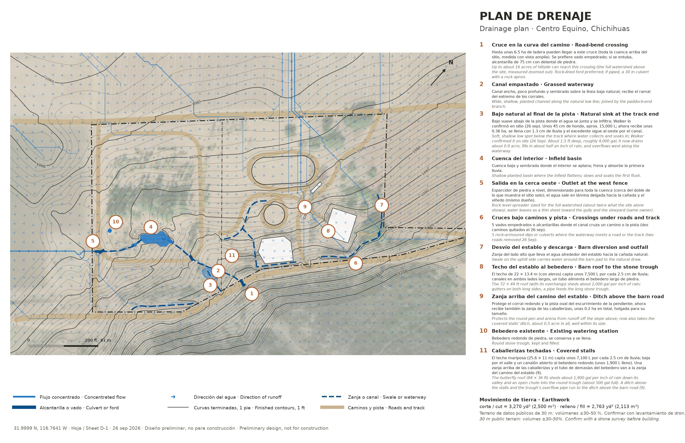
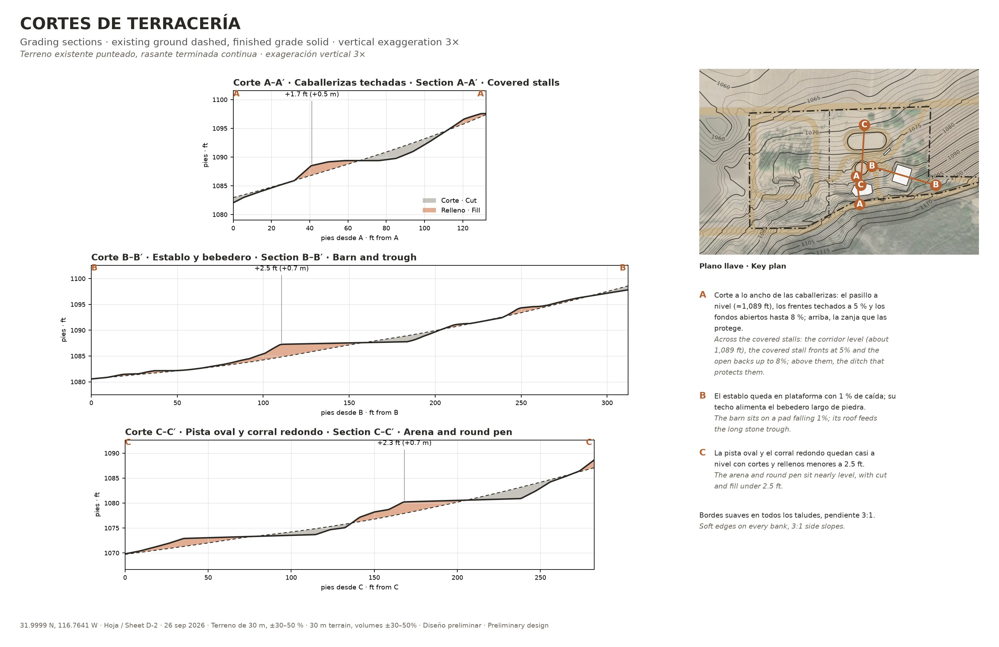
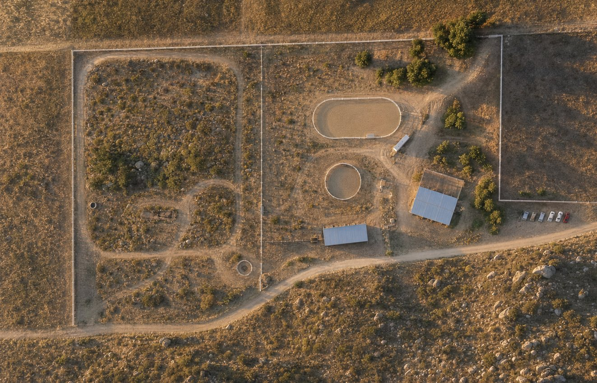
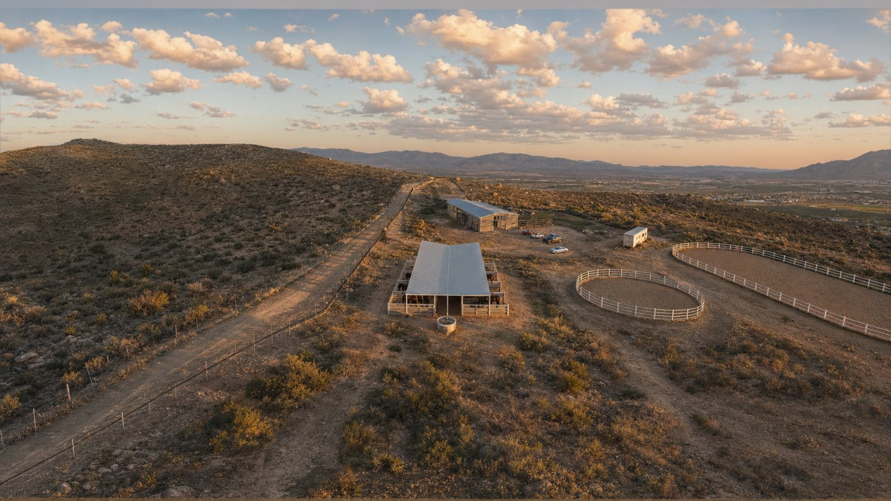
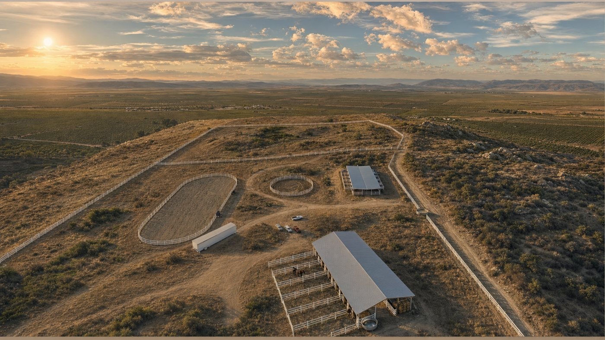
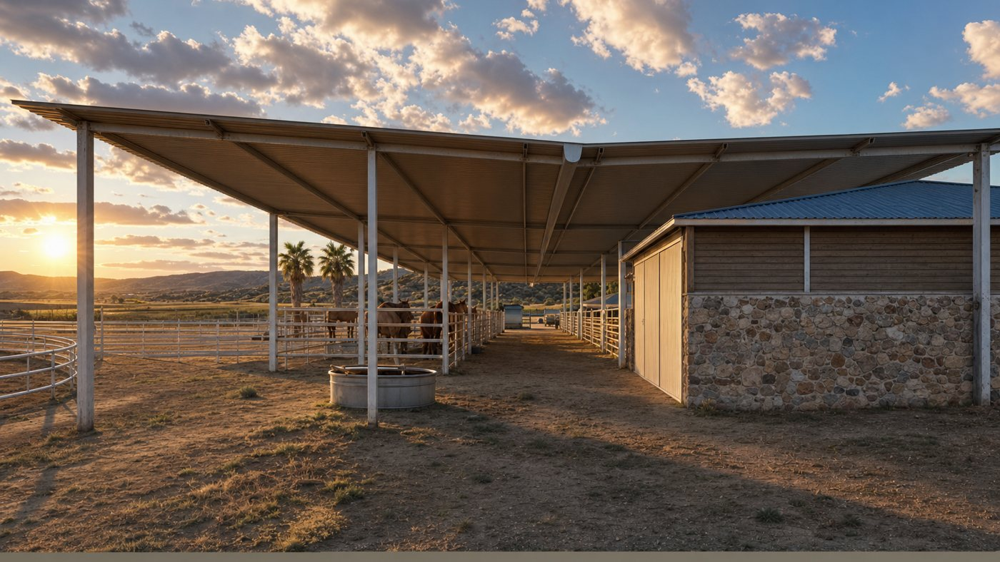

Plan de agua y terraceríaWater and grading plan
Toda la cuenca arriba del sitio, unas 6.5 ha de ladera medidas con vista amplia, escurre hacia el terreno desde el sur, cerca del doble de lo que se ve en el plano del sitio solo. El flujo principal cruza el camino en la curva, sigue por un canal empastado hasta un bajo natural abajo de la pista, donde se junta y se infiltra, y el excedente sale al oeste hacia la cañada y el viñedo. Walker confirmó en sitio el bajo exactamente donde lo marca el análisis.
The whole watershed above the site, about 16 acres of hillside measured zoomed out, drains onto the land from the south: roughly twice what the site sheet alone shows. The main flow crosses the road at the bend, follows a grassed waterway to a natural low spot below the track, where it collects and soaks in, and the overflow leaves west toward the gully and the vineyard. Walker confirmed the low spot on site exactly where the analysis put it.
Qué cambió el 26 y 27 sepWhat changed on 26 and 27 Sep
- 8 caballerizas de 16 × 20 ft y la alfalfa bajo el mismo techo, en el extremo de la línea amarilla más cercano al establo, con techo mariposa que llena un bebedero redondo; una zanja arriba de ellas y las demasías del bebedero van a la zanja del camino del establo (≈ 0.2 ha en total, holgada). 8 stalls of 16 × 20 ft and the alfalfa under one roof, at the stable end of the yellow line, with a butterfly roof that fills a round trough; a ditch above them and the trough's overflow run to the ditch above the barn road (about 0.5 acre in all, well within its size).
- Los corrales junto a la pista y su plataforma se quitaron: el terreno vuelve a su forma natural, y el bajo natural ahora recibe unas 0.36 ha; se llena con 1.3 cm de lluvia y el excedente sigue al oeste como antes. The paddocks beside the track and their pad are gone: the ground is back to natural, and the natural low spot now drains about 0.9 acre; it fills in about half an inch of rain and overflows west as before.
- Se quitaron dos caminos (el de los corrales a la puerta de la cerca y el de abajo de la pista) y sus cruces: quedan 5 cruces empedrados o alcantarillas. Two roads are gone (paddocks to the cross-fence gate, and the one below the track) with their crossings: 5 armoured crossings or culverts remain.
Hoja D-1 · Plan de drenajeSheet D-1 · Drainage plan
Las flechas azules muestran hacia dónde corre el agua sobre la rasante terminada; las líneas gruesas son flujo concentrado. Los números explican cada obra. El cruce en la curva (1) y la salida oeste (5) están dimensionados para toda la cuenca.
Blue arrows show where water runs on the finished grade; thick lines are concentrated flow. The numbers explain each piece of work. The road-bend crossing (1) and the west outlet (5) are sized for the full watershed.

Hoja D-2 · Cortes de terraceríaSheet D-2 · Grading sections
Tres cortes: a lo ancho de las caballerizas techadas (pasillo a nivel, frentes a 5 %, fondos hasta 8 %), el establo, y la pista oval con el corral redondo.
Three sections: across the covered stalls (corridor level, fronts at 5%, open backs up to 8%), the barn, and the arena with the round pen.

VistasViews
Pinturas generadas del modelo, sólo como referencia visual; el diseño está en las hojas. Vistas del 27 sep, a la hora dorada.
AI paintings of the model, for look and feel only; the design is on the sheets. Views of 27 Sep, at golden hour.




Qué está medido y qué es estimadoWhat is measured and what is estimated
- medido · checkedTrazo de caminos sobre la foto aérea que usa el modelo; niveles de plataformas y rasantes del modelo; el bajo natural, confirmado en sitio por Walker. Road lines fitted to the model's own aerial photo; pad levels and grades from the model; the natural low spot, confirmed on site by Walker.
- estimado · estimateTerreno público de 30 m: la cuenca (≈ 6.5 ha), volúmenes ±30–50 %, gastos de tormenta y tamaños de alcantarilla aproximados. En este terreno el flujo por cruce individual no es confiable, por eso los cruces se dimensionan para toda la cuenca. 30 m public terrain: the watershed (≈ 16 acres), volumes ±30–50%, storm flows and culvert sizes are rough. At this resolution the flow at any single crossing isn't reliable, so crossings are sized for the whole watershed.
- siguiente · nextUn levantamiento con dron afinaría cada corte, el bajo natural y los cruces. A drone survey would pin down every cut, the natural low spot and the crossings.